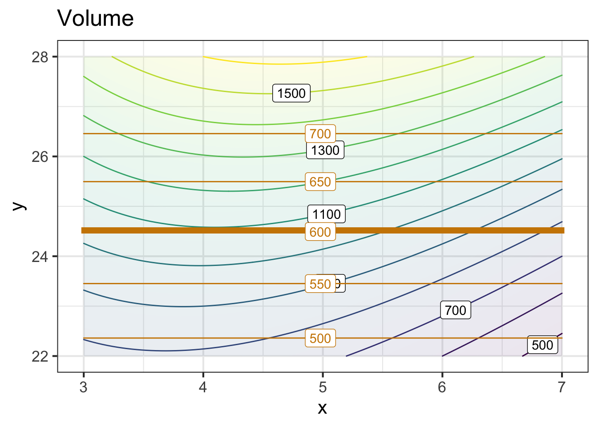
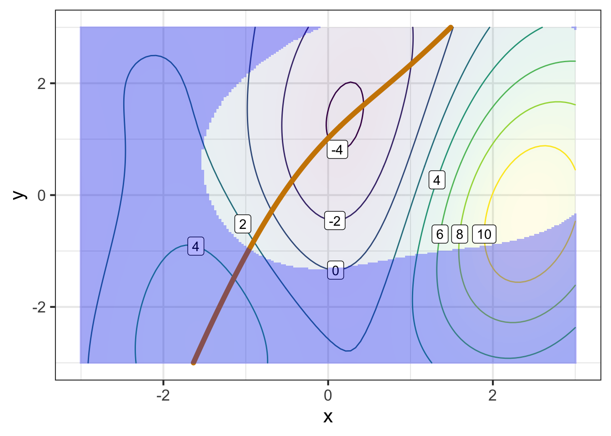

Chapter 29 Opimization and constraint
In Chapter 23 we introduced some basic concepts and terms relating to optimization: the objective function, that is, the quantity that is to be made as large as possible (maximization) or as small as possible (minimization), depending on context; argmin and argmax values, that is, the value of the inputs to the objective function that produce the optimal output; and the max and min, the output value of the objective function when the input is an argmax or argmin respectively.
A simple optimization problem has three main phases:
- a modeling phase in which the objective function is identified or constructed;
- a solution phase where argmin or argmax inputs are found.
- an evaluation phase where the objective function is applied to the argmin and/or argmax, and the result interpreted in terms of the real-world task at hand.
To illustrate, we’ll draw on a chestnut found in hundreds of calculus texts, finding the configuration to construct the rectangular box with the largest possible volume out of a piece of cardboard. The modeling phase starts with a representation of the box-construction and volume-finding process. Suppose, for the sake of simplicity, that we are working with a piece of cardboard fixed at 20 inches by 30 inches. For box construction, we’ll propose cutting out squares from each corner of the box of some side length \(x\). Those squares will be discarded and the box formed by folding up the flaps generated by the squares’ removal, as in Figure 29.1.

Figure 29.1: Cardboard for forming the simple box.
For the volume of the box, we’ll multiply the area of the bottom of the box by the height \(x\). Examination of Figure 29.1 should be enough to convince you that the volume \(V\) is a function of \(x\):
\[V(x) = x\cdot (20-2x)\cdot(30-2x) = x(600 - 100 x + 4 x^2)\ .\] Since the goal is to find the maximum possible volume, \(V(x)\) is our objective function.
The solution phase can be adequately accomplished by drawing a graph of \(V(x)\) and finding the \(x\) corresponding to the peak value of \(V(x)\). We’ll leave this for you to do in a sandbox; you can figure out the relevant domain by noting that the corner squares cannot overlap.
Another, more classical solution method is to examine \(\partial_x V(x)\) and solve for \(x^\star\) such that \(\partial_x V(x^\star) = 0\). Confirm for yourself that \[\partial_x V(x) = 600 - 200 x + 12 x^2\ ,\] This will be zero for \(x^\star\) giving \(600 - 200 x^\star + 12 \left[x^\star\right]^2 = 0\), which equation will be satisfied, as you can confirm with the quadratic equation at two values: when \(x_1^\star = 3.92\) or \(x_2^\star = 12.74\).
The evaluation phase can start with plugging in the objective function the values of \(x^\star\).
\[V(x_1^\star) = 1056.3\ \text{in}^3 \ \ \ \ \text{and}\ \ \ \ V(x_2^\star) = -315.6\ \text{in}^3\] It’s common sense that \(x_2^\star\) is not a viable solution. The negative volume at \(x_2^\star\) is a consequence of looking at \(V(x)\) beyond the sensible domain for cardboard boxes. More generally, as part of the evaluation phase we can look at the value of the convexity \(\partial_{xx} V(x^\star)\) to find out whether an \(x^\star\) value is an argmax or an argmin. Since \(\partial_{xx} V(x) = 24 x - 200\) we see that \(\partial_{xx} V(x_1^\star) < 0\), corresponding to an argmax, while \(\partial_{xx} V(x_2^\star) > 0\) which corresponds to an argmin. Alternatively, instead of computing the convexity, we could check whether we have an argmin or an argmax by evaluating the objective function at a nearby input.
The evaluation phase ought also to produce an indication of how sensitive the output is to small changes of the input near the argmax (or argmin). For example, setting \(x=4\) in will produce a volume output \(V(4) = 1056\) in2, hardly different than the “exact” maximum of 1056.3 in3 and perhaps preferred for the person who wants to make standard-size boxes.
The evaluation phase should also include a reflection on how well the model reflects the real-world situation. For example we’ve neglected the creases that arise from folding cardboard, so a more complete examination would estimate this effect. And the person skeptical about calculus-book chestnuts might wonder whether the object is really to create a box without a top!
Optimization problems analogous to this example do sometimes come up in applied work. More commonly, however, optimization problems involve much more complicated objective functions with many inputs. The next section considers the basis for a more general and practical approach to the solving phase of optimization. Later sections examine how this more general approach leads to methods for approaching the sort of real-world optimization problem where there are multiple objectives.
29.1 Gradient descent
The general approach we will take to the solving phase of optimization problems will be iterative as in Chapter 27. Start with an initial guess for an argmin and then construct a new function that can improve the guess. Applying this improvement function iteratively leads to better and better estimates of the true argmin.
For illustration purposes, we’ll use optimization problems where the objective function has two inputs. Such objective functions can be graphed with, say, a contour plot and it’s possible to see the action of the iterative improvement process directly. The idea of iterative improvement also applies to optimization problems with many inputs even though the action can’t be seen graphically.
Spring-mass systems: an example context
As a context for for talking about optimization, we’ll consider how to use optimization to calculate the configuration of simple mechanical systems consisting of interconnected springs and masses. Such configuration problems are especially important today in understanding the structure and function of proteins, but we will stick to the simpler context of springs and masses.
Figure 29.2 shows a mechanical system consisting of a mass suspended from a fixed mounting by three nonlinear springs.

Figure 29.2: A mass suspended from two springs.
The masses is shown by a black circles. Springs are the zig-zag shapes. The bold bar is the fixed mounting, as if from a beam on the ceiling of a room. The system has an equilibrium configuration where the springs are stressed sufficiently to balance each other left to right and to balance the gravitational force downward on the mass.
We want to calculate the equilibrium position. The basic strategy is to model the potential energy of the system, which consists of i. the gravitational potential energy of the mass; ii. the energy stored in stretched or compressed springs. Since the configuration of the system is set by the coordinate \((x_1, y_2)\), the potential energy is a function \(E(x_1, y_1)\). For brevity, we’ll leave out the physics of the formulation of the potential-energy function; shown in Figure 29.3.

Figure 29.3: The potential energy of the spring-mass system in Figure ??.
The potential energy has a bowl-like shape. The bottom of the bowl—the argmin—is near \((x=1.7, y-=1.3)\). In terms of Figure 29.2, the equilibrium position is a bit upward and to the right of the position shown in the figure.
With a graph of the objective function like Figure 29.3, the solution phase is simple. But for more complicated objective functions, with more than 2 inputs, the graph would not be feasible. For example, in the spring-mass system shown in Figure 29.4, the potential energy function has six inputs: \(x_1, y_2, x_2, y_2, x_3, y_3\). In genuine applications of optimization, there are often many more inputs.

Figure 29.4: A more complicated spring-mass system.
In a multi-input optimization problem, we don’t have a picture of the whole objective function. Instead, we are able to evaluate the objective function for a single given input at a time. For instance, we have a computer function that implements the objective function and we’re free to evaluate it at whatever inputs we care to choose. It’s as if, instead of having the whole graph available, the graph is covered with an opaque sheet with a loophole, as in Figure 29.5.

Figure 29.5: A more realistic view of what we can know about a function.
We can see the function only in a small region of the domain and need to use the information provided there to determine which way to move to find the argmin.
The situation is analogous to standing on the side of a smooth hill in a dense fog and finding your way to the bottom. The way forward is to figure out which direction is uphill, which you can do directly from your sense of balance and proprioception by orienting your stance in different ways. Then, if your goal is the top of the hill (argmax) start walking uphill. If you seek a low point (argmin), walk downhill.
The mathematical equivalent to sensing which direction is uphill is to calculate the gradient of the objective function. In Chapter 24 we used partial differentiation with respect to each of the input quantities to assemble the gradient vector, denoted \(\nabla f() = \left({\large \strut} \partial_x f(), \ \partial_y f()\right)\). In terms of Figure 29.5, where we are standing at about \((x_i=0.8, y_i=-2.3)\), we would evaluate the each of the partial derivatives in the gradient vector at \((0.8, -2.3)\).
The gradient points in the steepest direction uphill so, once you know the direction, take a step in that direction to head toward the argmax, or a step in the opposite direction if you seek the argmin. The process of following the gradient toward the top of the hill is called gradient ascent. Correspondingly, following the gradient downhill is gradient descent.

Figure 29.6: The gradient provides information about the shape of the local function in a convenient form to guide the step to the next locale in your journey toward the argmin or argmax.
For humans, the length of a step is fixed by the length of our legs and the size of our feet. The mathematical step has no fixed size. Often, the modeler gains some appreciation for what constitutes a small step from the modeling process. Referring to Figure 29.4 for example you can see that a small increment in \(x\) is, say, \(0.1\), and similarly for \(y\). There is little point in taking an infinitesimal step—that gets you almost nowhere! Instead, be bold and take a finite step. Then, at your new location, calculate the gradient vector again. If it’s practically the same as at your earlier position, you can wager on taking a larger step next time. If the new gradient direction is substantially different, you would be well advised to take smaller steps.
Fortunately, a variety of effective ideas for determining step size have been implemented in software and packaged up as algorithms. The modeler need only provide the objective function in a suitable form and providing a starting position or domain for the search.
The R/mosaic function argM() is set up to find argmins and argmaxes using the familiar tilde-formula/domain style of arguments used throughout this book. For instance, the potential energy of the spring-mass system shown in Figure 29.2 is available as Zcalc::SM_2_potential()
argM(SM_2_potential(x, y) ~ x & y, domain(x=0:3, y=-3:0))## # A tibble: 1 × 3
## x y .output.
## <dbl> <dbl> <dbl>
## 1 1.65 -1.21 -3.55Optimization using symbolic techniques is often found in textbooks as part of the derivation of textbook formulas. The symbolic techniques are especially appropriate because they allow parameters to be represented with symbols rather than as specific numbers. Usually the objective functions involved are simple.
Numerical techniques are the most widely used in practice. Optimization is an important operation in both science and management and much human ingenuity has gone into the development of effective algorithms. The modeler rarely if ever needs to reach beyond the software provided in technical computing environments such as R, MATLAB, Mathematica, or the many packages available for Python.
In data science and machine learning, increasingly software is provided as web services and APIs (application programming interfaces) such as TensorFlow for the particular machine technique called “deep learning.”
In using such software systems, the modeler needs to understand the structure of the arguments handed off to the systems. It’s also important to be able to test whether you have structured those arguments appropriately to represent your intentions. This often involves some level of debugging and the incremental development of objective functions so that you can verify correct performance on a simple version of the objective function before adding more detail and repeating the cycle of verify-then-add-more-detail.
As a simple example of support for such debugging, we’ll examine a basic R function, optim(), for carrying out optimization. You can see the documentation for optim() by giving the command ?optim in a sandbox. You’ll likely find it hard to follow at first and using such functions requires a deeper understanding of R programming than needed in this book. (The R/mosaic argM() function makes use of optim() internally, surrounding it with an interface using tilde expressions and domains.) To illustrate, Figure ?? traces the sequence of ascent steps followed by optim() in working toward the argmin of SM_2_potential().


Figure 29.7: The path followed by optim() in descending the gradient, starting at (0,0). Successive steps are numbered.
Starting at the initial guess, \((x_0, y_0) = (0,0)\) the algorithm takes a step of length about 1.5 to the east-south-east. The gradient at point \((x_1, y_1)\) is discernibly different than at \((x_0, y_0)\); the algorithm follows the new gradient vector but with a shorter step length. At \((x_2, y_2)\) there has been a more severe change in the gradient, so the angle takes an even shorter step to the point labeled 3.
The bottom two graphs zoom in on the gradient field for later steps. The most dramatic changes in direction are at \((x_6, y_6)\) and \((x_9, y_9)\). As the gradient vector gets shorter, so do the step sizes, terminating when the step size is insignificant.
Example 29.1 The potential energy function of the spring-mass system in Figure?? is available as the function Zcalc::SM_3_potential(). We can use argM() to to find the argmin:
argM(SM_3_potential(x1, y1, x2, y2, x3, y3) ~ x1 & y1 & x2 & y2 & x3 & y3,
domain(x1 = 0:3, y1=-3:0, x2=0:3, y2=-3:0, x3=0:3, y3=-3:0))## # A tibble: 1 × 7
## x1 y1 x2 y2 x3 y3 .output.
## <dbl> <dbl> <dbl> <dbl> <dbl> <dbl> <dbl>
## 1 0.796 -1.04 1.60 -1.56 2.40 -1.59 -2.04Figure 29.8 shows the argmin translated into the graphical format.

Figure 29.8: The equilibrium configuration of the spring-mass system from Figure ??.
Admittedly, the tilde-expression/domain interface to argM() is becoming ungainly with six inputs. In professional work, a different programming format based on vectors is used. We won’t need that for our simple examples.
29.2 Objectives and Constraints
Many real-world optimization problems do not fit neatly into the framework of constructing an objective function and then finding the argmin (or argmax). A common situation is having multiple objectives and, often, the original problem statement does not include all of the objectives. When such missing objectives become apparent, it’s necessary to visit the modeling phase of the problem to insert the new objective. By adopting the right approach to modeling, such situations can be readily handled and, even better, the modeling phase can bring new insight into the real-world problem.
We’ll illustrate by returning to the mathematically simplified problem of constructing an optimal cardboard box. Before, we stipulated that the raw cardboard stock has dimension 20 inches by 30 inches. Now we’ll generalize, and work with a piece of cardboard that has edges of length \(y\) and from which, as before, we’ll cut out square corners of length \(x\) on a side. Our objective is to make a box with the largest possible volume. (This will be an argmax problem.)
The area of the bottom of the box is \((y - 2x)^2\) and the box height is \(x\). The objective function is the volume of the box, area times height: \[V(x, y) \equiv x (y - 2x)^2\ .\] There are two inputs, \(x\) and \(y\), so a simple plot should suffice to find the argmax.

Figure 29.9: The volume of the box (in cubic inches) constructed by cutting corners of size \(x\)-by\(x\) out of a \(y\)-by-\(y\) piece of cardboard.
Scanning Figure 29.9 reveals a couple of things that you might not have anticipated. First, the argmax is in the extreme upper-left corner of the graphics frame, not in the center as in previous examples. Second, the argmax in this corner, \((y=0, x=10)\) is logically inconsistent with the idea of a cardboard box.
The logical inconsistency stems from an inadmissible value for \(x\). For \(2x > y\), the bottom of the box would have negative edge length. Multiplying the two negative edge lengths to calculate the area produces a positive area, but this is not a realistic calculation.
To make the calculation realistic, we should look at the situation only in that region of the graphics frame where \(y > 2x\). This restriction is called an inequality constraint.
Figure 29.10: The inequality constraint that \(y > 2x\) renders much of the graphics frame inadmissible as a possible solution. The inadmissible region is shaded in blue. The argmax must be sought in the unshaded region of the frame.
With the \((x,y)\)-domain restricted to the values that are physically realistic, we can see that the argmax is still on the edge of the frame, at \(y=30\) and \(x\approx 5\), where the volume of the box will be about 1800 in3. This result should cause you pause, since there was nothing in the problem statement that limited \(y\) to be 30" or less. If we replotted with a larger domain for \(y\), we should see still larger boxes, without any limit.
Essentially, the interpretation of the problem as originally posed is that, with enough cardboard we can make a box of any size! That’s not so useful. The fault in the problem statement is that it omitted another objective function: use as little cardboard as possible. But if that were our sole objective, we would make a zero-volume box out of zero-area of cardboard. What we want, somehow, is to make as big a box as possible out of as little cardboard as possible: we have two objectives! In this case, the objectives are in conflict: making a bigger box (good) uses more cardboard (bad).
Common sense tells us to balance the two objectives, but how to represent this mathematically? Ideally, we would know how much box-volume is worth to us and how much cardboard costs, and we could construct an objective function that incorporates both value and cost. If you have the information to do this, then go ahead. For instance, if each cubic inch of volume is worth 1 cent, and each square inch of cardboard costs 3 cents, then the objective function will be the following (with output in cents):
\[\text{Profit}(x,y) \equiv 10\, \sqrt{x (y-2x)^2} - 0.3 y^2\]
Figure 29.11: The “profit” (value minus cost) of the cardboad box (cents).
The Profit() function has an argmax at about \(y=45, x=7.5\). The value of the Profit() function at this argmax is a bit greater than 210 cents.
One problem with constructing objective functions like Profit() is finding appropriate value and cost. Typically, it requires a market and the ability to buy and sell to set a value, but for a little company designing a box there’s unlikely to be such a mechanism. In a realistic modeling setting, the challenge is to convince the decision makers that the model function is right, something it can be hard to do without good evidence.
But let’s imagine a new factor coming into play. At the meeting where the box-design decisions are being made and where you are presenting your analysis in Figure 29.11, the graphic designer speaks up. “The trending shape for this year is cubic. We want the box, whatever it’s size, to be a cube.”
Luckily, you the modeler can quickly incorporate this into your analysis. To be a cube, the height \(x\) of the box has to be the same as the width and depth \(y - 2x\). So you can incorporate the designer’s wish into the model of the decision factors by adding a new constraint:
\[x = y - 2x \ \ \ \implies y-3x=0\ \ \ \ \text{constraint: box must be cubic}\] This is called an equality constraint. Figure 29.12 shows the equality constraint in green: to be a cube, \(x\) and \(y\) must be somewhere along the green line.
Figure 29.12: An equality constraint calling for the box to be cube-shaped.
There happens to be something remarkable about the be-a-cube constraint. It runs practically parallel to the 50 cent contour of the profit function. If you look carefully, you can see that the highest profit along the green constraint occurs about \(y=25\), but the differences in profit along the constraint are mainly trivial for \(y < 35\) or thereabouts. This means that the profit function does not show a clear preference for one size box instead of another, pick any \(y < 35\) and look up the corresponding \(x\) that falls on the green constraint.
Many organizations use a budget mechanism to manage their affairs. The organization defines divisions or projects, and each of these is given a dollar budget to stay within. The individual division or project manager can arrange things more or less as she thinks best, so long as she stays within the budget. This is a kind of constraint: a budget constraint.
Suppose you have been tasked to set up a new factory and given a budget of $5,500,000 to do so. You were given this task because you have a particular expertise in how best to set up the factory, but your design will of course depend on the relative prices of the different inputs to the production process. For simplicity, let’s imagine that there are two main inputs: labor \(L\) and capital/equipment \(K\). It would be silly to spend all the budget on labor and none on capital; the workers would have no tools to work with. Similarly, capital without labor has no productive value. The best design for the factory will be a mix of labor and capital.
Since the purpose of the factory is to make things for sale, a good objective function will be the sales value of the output produced by the factory. Economists have a favored form for production functions of this sort, called a power-law called the Cobb-Douglas function. The essential insight behind the Cobb-Douglas function is that doubling both capital and labor (as if you built a second factory alongside the first) should double production. The Cobb-Douglas form for production as a function of capital and labor is \[Q(L, K) = p b L^a K^{1-a}\ .\] You will use your expertise to set the values of the \(a\) and \(b\) parameters. The price \(p\) of each unit of output will be set by the market: Let’s assume for planning purposes that it’s $450 per unit. Suppose you have determined that \(a=0.3\) and \(b=40\) are appropriate. Then the production function will be as shown in Figure 29.13.

Figure 29.13: A Cobb-Douglas production function with \(p=100\), \(b=40\) and \(a=0.3\). (Output units in dollars).
As you can see from Figure 29.13, the more labor and the more capital you use, the higher the production. Notice that the production function itself does not have an argmax interior to the domain being plotted. It’s one of those “more is better” situations.
Suppose that labor, in person-months costs $6000 per unit. Capital, in units of production stations, costs $13,000 per unit. Your budget constraint reflects the total cost of capital and labor: \(4000 \cdot L + 15000 \cdot K \leq 5500000\). This constraint is graphed in Figure 29.14.
Figure 29.14: The production function with the budget constraint shown in green.
Any mixture of labor and capital that falls outside the green zone stays within your budget. What’s the best mixture? The one that gives the largest production. You can read this off the graph, \(L\approx 650\) and \(K\approx 125\). Notice that near the argmax, the contours of the production function are parallel to the boundary of the constraint zone. A good way to think about this is to walk along the boundary of the constraint zone from top to bottom. As you start near \(K=250\) and \(L=380\), the path you walk goes uphill in terms of the production function. The path continues uphill until you reach the argmax. Near the argmax, the path is level. After the path crosses the argmax, it is leading downhill. Near the argmax, the production function contours are parallel to the constraint boundary because, as at argmaxes generally, the objective function is flat near the argmax. With the constraint boundary crossing the slope, the argmax means that the path is locally level even though it slopes up and down on either side of the path.
29.3 Constraint cost
In the previous section, the graphic designer’s request that the box be cubic was translated into an equality constraint, \(y-3x=0\), shown as the green line in Figure 29.12. The skilled modeler can bring additional power to the analysis by translating that constraint, \(y-3x=0\) into a function, for example \[\text{Equation:}\ \ \ y - 3x = 0\ \ \longrightarrow\ \ \ \text{Function:}\ \ \text{cube_box}(x, y) = -\| y - 3x\|\ .\] Any \((x^+, y^+)\) that produces \(\text{cube_box}(x^+, y^+) = 0\) is a pair that satisfies the constraint. In other words, the equality constraint amounts to the zero contour of the cube_box() function.
Translating the constraint into a function changes “the box must be a cube” into “better if the box is a cube.” Thus, cube_box() becomes an objective function that has an argmax when the box is a cube. Instead of having the single objective function Profit() and a constraint (“cube-shaped box”), we have two objective functions.
The constraint-to-function translated situation is shown in Figure 29.15:

Figure 29.15: The two objective functions, Profit() and cube_box(), that are to be optimized simultaneously. The cube_box() function is shown with green contours, with the heavy green line being the contour at cube_box(x,y)=0.
The optimization problem now becomes finding a way to maximize both objectives simultaneously, that is, picking an \((x^\star, y^\star)\) that makes the value of both objectives as good as possible. Unfortunately, increasing the \(Profit()\) of the box can be achieved at the cost of decreasing the value of cube_box() function; the two objectives are in conflict.
Admittedly, Figure 29.15 is graphically busy and hard to read. You can start by picking a point in the middle of the graphics frame and reading out, from the appropriate contours, the output value of the Profit() function and the output value of the cube_box() function.
Earlier, we saw that if restricted to inputs on the contour cube_box(x,y) = 0, the optimal output value of Profit() is about 50 units. Now we have a broader picture. For instance, suppose we allow a “little” deviation in box shape from a cube, say, cube_box(x,y) = -5. If we allowed this, the value of the Profit() function could be increased from 50 to about 115 cents.
Whether the 65 cent increase value justifies the deviation from a cube measured as \(cube_box(x,y) = -5\) is worthwhile is a matter of judgement. It’s obvious, of course that a loss of 5 is justified by a gain of 65, but remember that the 65 has units of cents whereas the -5 is in some kind of abstract “cube points.” We don’t have an immediate way to translate “cube points” into cents. The two different units are said to be incommensurate, meaning that they can’t be directly compared. Nonetheless, we now have a basis for a conversation. It might go like this:
Modeler to Designer: I realize that from your perspective, a cube is the optimal shape for the box.
Designer: Right. Cubes are in fashion this year. Last year it was the Golden Ratio.
Modeler: It might sound surprising, but we find that so long as you are close to the optimal, it doesn’t much matter if you are exactly on it. How close to a perfect cube would be good enough?
Designer: What’s really important is that the box be perceived as a cube in our sales material. I think that most customers would think “cube” so long as the edge lengths are within about 15% of one another.
Modeler: That’s very helpful. Let me re-make the graphic showing the percent deviation from cubeness. Then we can see how much extra box Profit() we can get by allowing 10% deviation.

Modeler: A 10% deviation lets us get to a higher Profit(): from 50 cents to 65 cents per box.
Product manager: How about a 30% deviation? That let’s us get up to about 100 cents.
Designer: But it would make the box shaped almost like a brick. Bricks are so 1990s!
Modeler: It sounds like a 15% deviation would be about right.
Posing the problem as the optimization of two objective functions, rather than an objective and a constraint, allows such conversations to be held.
Let’s return to a previous example about determining optimal levels of labor and capital in a factory. In that example, the objective function was the money value of the product produced. There was also a budget constraint. In translating the budget constraint into a function, we can call the function expenditure(K, L), with the constraint amounting to saying that the expenditure must be at a certain level: expenditure(K, L) = $5,500,000 in the example.
To see check whether it’s worthwhile to stick to the constraint, we can plot both the production function and the expenditure function together.

Figure 29.16: The production function (magenta, curved lines) and the expenditure function (brown, straight lines). Contour labels are in millions of dollars. We’ve drawn contours at levels that happen to be tangent to the expenditure contours.
With the production function and budget constraint, the optimum was exactly on the $5.5 M expenditure line; the argmax for production is just about where the label 7.1 is in Figure ??. That is, the maximum production consistent with the budget is $7.1 M. Translating the budget constraint into an expenditure function reveals some other possible choices. For instance, if the budget were expanded to $6.5 M, the production level would reach $8.4 M.
That an increase in budget of $1 M produces an increase in production worth $1.3 M (that is, 8.4- 7.1) sounds like a good argument for increasing the budget. But higher management may have even better uses for that $1 M expenditure, perhaps in some other product line or in research and development.
It’s helpful to present the increase in the objective function output that can be had by relaxing the budget constraint as a ratio. In this case, the ratio is 1.3/1.0. This ratio is often called the Lagrange multiplier. Some economists have a more evocative name for it, the shadow price of the constraint. Thus, the constraint-to-function translation provides a way to put a cost on the constraint, which can be a reasonable way to determine the value of something when there is no direct market for it.
An important example of a shadow price comes in the setting of life-saving interventions. For example, increasing spending on highway safety can save lives. If $7.5 billion in increased expenditures saves 1000 lives, the shadow price is $7.5 M per life. People who mis-interpret the constraint-to-function methodology often think that it’s craven to put a money value on life. In reality, the method merely reveals the money value on life implicit in decisions such as budget allocations. Knowing that the shadow price is $7.5 M does not say what the value of life should be. But it provides a mechanism for comparing different uses for the money. For instance, if the shadow price for increased regulation of toxic industrial chemicals is $11.3 M per life, the relative shadow prices provide an indication that budget money might reasonably be shifted from chemical regulation to highway safety. Economists and epidemiologists who undertake such calculations reveal that the mixture of spending on different life-preserving interventions is far from optimal.
::: {.takenote data-latex=""} Generations of calculus students have been taught a method of mathematical optimization in the presence of constraints that involves positing a Lagrange multiplier, typically written as \(\lambda\), and carrying out a series of differentiations followed by equation solving to find an argmax, which simultaneously provides a numerical value for \(\lambda\). It’s easier to understand the motivation behind this by considering the gradient of the objective function and the gradient of the constraint function. If the goal is, say, to maximize production and simultaneously minimize expenditures, we would want to walk up the production gradient and down the expenditure gradient.
Figure 29.17 shows two gradient fields, one for the production function in the factory-design example and one for expenditure. (The negative of the expenditure gradient is shown, since the goal is to keep expenditures small.)
Figure 29.17: The production and expenditure functions displayed as gradient fields. Expenditure is brown, production is magenta.
At each point in the graphics frame, the two gradient vectors form an angle. For example, near the point labeled (a) the angle is roughly 140 degrees, while near (b) the angle is 180 degrees.
Any value of \(K\) and \(L\) where the angle is less than 180 degrees is sub-optimal or dominated by some other choice of \(K\) and \(L\). For instance, near label (a), you could improve both production and expenditures by moving to the southeast. When the angle is 180 degrees, the objective and constraint functions are in complete opposition to one another; any movement in favor of one comes at the cost in the other.
29.4 Exercises
Exercise XX.XX:  QXWRP8
QXWRP8
The figure shows a contour plot of an objective function \(f(x,y)\).

There is a gradient field and a path plotted along with the contour plot.
A. Does the gradient field in Plot 1 correspond to the contour plot of the objective function? Explain why or why not both in terms of the direction of the gradient vectors and their lengths.
B. Does the path, which starts at the point marked “0” and heads toward the point marked “10,” follow the gradient field. Explain your answer.
C. Is the path a gradient ascent, a gradient descent, or neither.

D. In Plot 2, is the path a gradient ascent, a gradient descent, or neither.
E. In Plot 2, is the path a gradient ascent, a gradient descent, or neither.
Exercise XX.XX: rG11sg
The plot shows an objective function (contours labeled in black) and a constraint function (in orange).

What is the constrained argmax when the constraint level is at 600? (Bold orange line.)
What is the value of the objective function at this argmax?
What is the shadow price of an increase in the level of the constraint?
Exercise XX.XX: LiJkK2
In this exercise, you will work with an optimization problem. First, we’ll ask about a mathematical solution to the problem. Next, we’ll show that the mathematical solution is not necessarily the best real-world solution, because of multiple objectives in decision making. Then we’ll show you a real-world decision-making rubric that’s widely accepted, at least among people who listen to the whole story with an open mind.
The graph shows the estimated number of lives saved by three different health-care related interventions – A, B, C – as a function of the amount of money spent on each.

You have $1,000,000,000 to spend altogether on these interventions. Your policy alternatives are all the different combinations of spending on (A), (B), and (C) that add up to $1B (or less).
How should you split up the money among the interventions? For example, we could spend $125M on B, $125M on C, and $750M on A. This would save an estimated 346 lives. Can we do better?
Imagine that we use \(x\), \(y\) and \(z\) to denote expenditure, with \(x\) spent on intervention A, \(y\) on intervention B, and \(z\) on intervention C. Altogether, the budget is \(x + y + z = \$1B\).
Question A Suppose \(x = 750\), \(y = 125\), and \(z=125\), where units are millions of dollars. It’s suggested that reducing \(x\) by $1M in order to increase \(z\) by that amount will produce a better outcome in terms of the total number of lives saved. That is, move some money from intervention A to intervention C. Is this suggestion correct? Why or why not?
- Not correct. The number of lives saved by spending $750M on A is larger than the number that would be saved by spending that much on B or C.︎✘ We’re only talking about moving a small amount from A to C
- Not correct. We will want to move the money to B instead.︎✘ Be that as it may, the question was whether to move money from A to C.
- Correct. The derivative \(\partial_x A(x)\) at \(x=750\) is smaller than the derivative \(\partial_z C(z)\) at \(z=125\).Good. Reducing \(x\) by a small amount will reduce the output \(A(x)\), but since \(\partial_z C(z=125)\) is greater, the loss in output due to a reduction in spending on A will be more than made up by an increase in output from spending more on C.
- Correct. We should spend equally on all three interventions. That is, set \(x = y = z = 333.33....\)︎✘ This is intuitively attractive, but still doesn’t address the question of whether the outcome would be improved by moving money from A to C.
A general principle is this: If spending a little more on one intervention increases the output more than the loss due to spending less on another intervention, the shift in funding is worthwhile.
Question B If you follow the above logic, you will continue to move money from A to C until it is no longer beneficial to do so. What will be the maximum amount of spending on A makes it not worthwhile to move additional money from A to C? (Choose the closest answer.)
$250M︎✘ $375M︎✘ \(500M<span class='mcanswer'>\) $ $625M︎✘
Question C Imagine that you have moved all the money from A to C that it’s worthwhile to do . Which of these statements is true at those values \(x_0\), \(z_0\)?
- \(\partial_x A(x_0) = \partial_z C(z_0)\)Correct.
- \(A(x_0) = C(z_0)\)︎✘
- \(C(x_0) = A(z_0)\)︎✘
- \(\partial_x A(x_0) = 0\) and \(\partial_z C(z_0) = 0\).︎✘
We found it worthwhile to move expenditure from A to C to optimize the sum of their outputs and are operating at about \(x_0 = \$500M\) and \(z_0 = \$375M\), leaving \(y=\$125M\) to spend on intervention B. Is it worthwhile to move money from A or C to B or vice versa? But first, a simpler question.
Question D If we were going to move a small amount of money from A or C into B, would it be better to take the money from A or from C? Why?
- Take it from A, since we’re spending far more on A than C.︎✘
- Take it from C, since we’re already spending far less on C than on A.︎✘
- Take it from C. The slope \(\partial_z C(z_0)\) compared to \(\partial_x A(z_0)\) is such that a small reduction on spending on C has less impact than a small reduction in spending on A.Nice!
- Take it from A. The slope \(\partial_z C(z_0)\) compared to \(\partial_x A(z_0)\) is such that a small reduction on spending on A has less impact than a small reduction in spending on C.︎✘
Question E Right now in our process, we’re planning to spend $125M on B. Is it worthwhile to move money from C to B?
- No, the output of B larger than the output of C at $125M.︎✘
- Yes, move most of the money from C to B.︎✘
- Yes, but only move a little money from C to B.Correct.
- No, move money from B to C.︎✘
Question F At the optimal amount of money \(y^\star\) spent on B and \(z^\star\) spent on C, which of these is true about the slopes \(\partial_y B(y^\star)\) and \(\partial_z C(z^\star)\)?
- There’s not any fixed relationship. They are what they are.︎✘
- The two slopes are equal.Excellent!
- The slope of B is greater than the slope of C.︎✘
- The slope of C is greater than the slope of B.︎✘
Question G Is it more proper to say the “slope \(\partial_z C(z^\star)\)” rather than the “derivative \(\partial_z C(z^\star)\)?” (This is a general review problem for the course, not something specifically about optimization.)
- Yes. A derivative is a function while a slope is a quantity.Excellent!
- No. Slope and derivative are the same thing.︎✘ No, the derivative is a function. When you evaluate that function at a particular value of \(z\) (say, \(z^\star\)) the output will be the slope of the original function at that value of \(z\).
- Yes. “Derivative” sounds fancier than “slope”.︎✘ It’s not a matter of fancy, it’s a matter of being precise.
- No. Slopes measure steepness from right to left, while derivatives give steepness from left to right.︎✘ Where did that come from. The convention for the sign of a slope is always the direction left to right.
Background: The graphs are fictitious, but let’s pretend they are:
- A Surgical treatment of congenital heart defects in newborns.
- B Treatment for hemophilia.
- C Memory-care for people with Alzheimers.
Notice that the people being affected are in different, non-overlapping groups. So moving funding from one group to another is effectively “robbing Peter to pay Paul.” If you, as a decision maker inherited a situation where \(x = \$750M\), \(y=\$125M\), and \(z=\$125M\), changing the expenditures would make one group better off (no matter how you did it!) and would make another group worse off. And imagine the headlines if you moved money from A to C or B: “Government slashes funding for newborns!”. Or perhaps an editorial: “We need to find a way to increase funding for hemophilia without cutting other life-saving spending.” This raises an important question: Is it ever worthwhile to forgo spending to save lives? How would anyone decide which lives are worth saving? Most people are uncomfortable with such questions. Yet the decisions taken by leaders, whatever they be, inevitably have a mathematically equivalent formulation which translates to the value of life.
Probably, most people would decline to make a decision comparing two lives, for instance, saving a 10-year old versus saving a 90-year old. But it is not always possible to escape such trade-offs and the people who need to take the decision need guidance about what to do. In an open society, we expect such decisions to be backed by good rationale and so we have to develop means for distinguishing between better and worse rationales.
One example comes from epidemiology and the concept of a “quality-adjusted life year” (QALY). A QALY is a measure of duration of life adjusted for the health condition of the person — a year of a person in good health is 1 QALY, but a year in a person in very poor health is less than 1 QALY.
QALYs do not solve the problem of optimizing health-related outcomes. They are an imperfect means of dealing with an impossible problem. Sometimes that is the best we can do.
Exercise XX.XX: 2ZoCl8
Here is the gradient field of an objective function.
 1. Where is the argmax?
1. Where is the argmax?
Exercise XX.XX: W11rG9
The figure shows an objective function (contour plot) with two different constraints: an inequality constraint (satified outside the blue region), and an equality constraint (brown).
 1. What is the min of the objective function, ignoring the constraints?
1. What is the min of the objective function, ignoring the constraints?
What is the max of the objective function, ignoring the constraints?
What is the min and max of the objective function, subject only to the equality constraint? Is the equality constraint active?
What is the min and max of the objective function, subject only to the inequality constraint? Is the constraint active?
Subject to both the equality and the inequality constraints, what is the max of the objective function? Are both constraints active?
Exercise XX.XX: B7rG9
The figure shows an objective function (contour plot) with two different constraints: an inequality constraint (satified outside the blue region), and an equality constraint (brown).

1. What is the min of the objective function, ignoring the constraints?
2. What is the max of the objective function, ignoring the constraints?
3. What is the min and max of the objective function, subject only to the equality constraint? Is the equality constraint active?
4. What is the min and max of the objective function, subject only to the inequality constraint? Is the constraint active?
5. Subject to **both** the equality and the inequality constraints, what is the min of the objective function? Are both constraints active?
</details>
<details>
<summary>**Exercise XX.XX**: <span><a name="File: Exercises/crow-trim-laundry.Rmd" href="#h05BsT"><img src="www/icons8-signpost.png" title="Location: Exercises/crow-trim-laundry.Rmd" width="12px"/></a><span style="color: red; font-size: 9pt;">h05BsT</red></span></summary>
You are a member of a health-care oversight committee that allocates funds for investment in health-care facilities. The committee has two proposal before it and needs to decide how best to spend the available $50M budget:
* **Proposal A**: Expansion of the pediatric organ transplant unit.
* **Proposal B**: Creation of a new rehabilitation center for traumatic injury patients.
Experts have evaluated each proposal in terms of different cost options and the impact that each will have on health outcomes. Following a standard epidemiological method, the impact is estimated in terms of "Quality Adjusted Life-Years" (QALY), a measure that combines the number of people affected, the number of years of prolonged life, and the improvement in quality of life for those treated.
The expert estimates are available in the data frame `QALY_impact`:
**QALY Impact of the Proposals**
```r
QALY_impact## # A tibble: 6 × 3
## expend A B
## <dbl> <dbl> <dbl>
## 1 0 0 0
## 2 10 40 30
## 3 20 100 80
## 4 30 150 140
## 5 40 170 160
## 6 50 180 175Such estimates from experts should be taken with a grain of salt, but they are often the best information you have to inform a model.
You can turn the expert’s opinions into functions by using splines. In this case, there is good reason to think that output will increase monotonically with expenditure, so a monotonic spline is a good choice. The functions were created using these commands and are already available in your sandboxes:
fA <- spliner( A ~ expend, data=QALY_impact, monotonic=TRUE)
fB <- spliner( B ~ expend, data=QALY_impact, monotonic=TRUE)The problem is to find the best values for expenditures on Proposal A and B — call these expenditures \(x_A\) and \(x_B\) – given constraint that total expenditure is \(x_A + x_B = 50\).
A simple approach is to plot out the total benefit as a function of expenditures on each of A and B:
overall <- makeFun( fA(xA) + fB(xB) ~ xA + xB)
g_budget <- makeFun(xA + xB ~ xA + xB)
contour_plot(overall(xA, xB) ~ xA + xB,
domain(xA=range(0,50), xB=range(0,50))) %>%
contour_plot(g_budget(xA, xB) ~ xA + xB, filled=FALSE,
contours_at=NULL, contour_color="orange3", alpha=0.5)How can you confirm that the red contours in the plot genuinely represent the budget constraint at the indicated level?
Question A What’s the largest number of QALYs that can be produced from combining the two proposals with a total budget of $50M?
120︎✘ 160︎✘ 180︎✘ 240\(\heartsuit\ \) 300︎✘ 340︎✘ 350︎✘ 360︎✘
Question B What is the location of the argmax in the previous graph?
- \((A = 0, B = 50)\)︎✘
- \((A = 6, B = 44)\)︎✘
- \((A = 12, B = 38)\)︎✘
- \((A = 22, B = 28)\)Right!
- \((A = 34, B = 16)\)︎✘
- \((A = 41, B = 9)\)︎✘
- \((A = 50, B = 0)\)︎✘
Another way to look at the problem is to find the total QALY outcome as a function of the amount \(x_A\), recognizing that once \(x_A\) is set, the remaining money will go to option B, so \(x_B = 50-x_A\). The following sandbox makes the plot.
slice_plot( fA(xA) + fB(50-xA) ~xA, domain(xA = c(0,50)))Changing the Budget
A broader social question is whether the budget is being set at an appropriate level. One way to examine this is to look at how the QALY outcome changes as the budget changes.
For this, we’re going to find the set of non-dominated solutions, that is, all the values of \(x_A\) and \(x_B\) at which the derivatives \(\partial_{x_A} f_A()\) and \(\partial_{x_B} f_B()\) are equal.
The following sandbox shows the difference between those two derivatives along with a bunch of different constraint paths.
dfA = D(fA(xA)~xA)
dfB = D(fB(xB)~xB)
contour_plot( dfA(xA) - dfB(xB) ~ xA&xB,
domain(xA=range(0,50), xB=range(0,50)),
contours_at = c(-2, -4, 0, 4, 2), skip=0) %>%
contour_plot(xA + xB ~ xA + xB, contour_color="orange3", skip=0)Yet another constraint!
Question C The American Association of Allergy Activists (AAAA) has lobbied Congress to mandate that, of the 50 units of available funds, funding for A must be \(x_A \geq 40\). How much would this constraint reduce the overall output for the two interventions combined? (Remember, if you’re spending, say, 45 on A, you can’t spend more than the remaining 5 on B.) The challenge for you in answering this question is to pick the appropriate one of the above graphs. Once you have done that, the answer is evident.
- No reduction at all.︎✘
- About 10-20 QALYs.︎✘
- About 40-60 QALYs.Correct.
- About 100-120 QALYs.︎✘
- It would actually increase the output.︎✘
Exercise XX.XX: VHn3UG
Based on an extensive but fictive observation of activity and grades of college students, the model shown in the figure was constructed to give GPA as a function of the number of hours each weekday (Monday-Friday) spent studying and spent in social activity and play. (Activity during the weekend was not monitored.)

Several points in the graphic frame have been marked with red letters. Refer to these letters when answering the following questions.
Question A According to the model, what’s the optimal combination of Study and Play to achieve a high GPA?
F︎✘ G\(\heartsuit\ \) H︎✘ I︎✘
Question B Which of these letters marks a place on the graph where the partial derivative of GPA with respect to Play is positive?
B︎✘ C︎✘ K\(\heartsuit\ \) L︎✘
Question C Which if these ketters marks a place on the graph where the partial derivative of GPA with respect to Play is negative.
A\(\heartsuit\ \) F︎✘ H︎✘ K︎✘
Question D Where is the partial derivative with respect to Study is negative?
- Nowhere. \(\partial_{study} GPA()\) is always positive. More study = better grades.︎✘
- EExcellent!
- F︎✘
- L︎✘
Question E Study and Play are not the only activities possible. Sleep is important, too, as are meals, personal care, etc. In the study, students were observed who spent up to 22 hours per day in Study or Play. Presumably, such students crashed on the weekend.
Suppose you decide to budget 12 hours each weekday day in activities other than Study and Play. Which letter labels the constrained optimal mix (argmax) of Study and Play.
I︎✘ J︎✘ K\(\heartsuit\ \) L︎✘
Question F What is the “shadow price” of GPA with respect to the budget for a budget constraint of 12 hours? Give both an estimated numerical value as well as units.
- -0.8 hour/gradepoints︎✘
- 0.3 gradepoints/hourCorrect.
- +0.9 gradepoints/hour︎✘
- +1.3 hour/gradepoints︎✘
Question G Consider a student who budgets 22 hours per day for Study and Play. Which letter is closest to the constrained argmax with a 22-hour constraint?
A︎✘ B\(\heartsuit\ \) C︎✘ D︎✘
Question H What is the “shadow price” of GPA with respect to the budget constraint of 22 hours? Give the estimated numerical value.
- -0.5 gradepoints/hourCorrect.
- 0 gradepoints/hour︎✘
- +0.5 gradepoints/hour︎✘
- +1.0 gradepoints/hour︎✘
Question I Based on the shadow price from the previous question, which of these is the best advice to give the student (who seeks to maximize GPA)?
- You’re hopeless. There aren’t enough hours in the day for you to get a good GPA.︎✘
- You’ve got to squeeze out more effort studying. Give it your all!︎✘
- Play more, study less!︎✘
- Study less︎✘
- Study less, play less. Sleep!Nice!
Exercise XX.XX: Yb6tVr
We’d like to make a folded cardboard box in the most efficient way possible. As you know, cardboard boxes have four sides as well as eight flaps, four for the top and four for the bottom. The flaps are arranged to provide double coverage; you fold the flaps from one direction and then fold over them the flaps from the other direction.

The diagram depicts the box sides and flaps laid out on a flat piece of cardboard. The flaps are shaded with diagonal lines.
Suppose the height, width, and depth of the box are \(h\), \(w\), and \(d\) respectively. The box volume is easy:
\[V = h w d\] The area of cardboard consists of the the four sides and the eight flaps. Each component’s area is a product of the two edge lengths. For example, the box sides are either \(w h\) or \(d h\). The flaps, each of which extends half-way across the bottom or top have areas \(w d/2\).
Question A Which of these formulas gives the area of the cardboard making up the box?
- \(2 h(w + d) + 4 w d\)Good.
- \(4 h(w + d) + 2 w d\)︎✘
- \(2 h(w + d) + 8 w d\)︎✘
- \(4 h(w + d) + 4 w d\)︎✘
A common size for a box is 1.3 cubic feet. We’ll use feet as the units for \(w\), \(h\), and \(d\).
Question B The following formulas do not describe the area of the cardboard, but they are nonetheless formulas for something. Except one of them, which cannot be true. Which one?
- \(h(w + d)/d + w d^2/h\)︎✘
- \(h(w + d) + w h d\)Right! This formula is not dimensionally consistent
- \(h(w + d) + w^2 h/d\)︎✘
- \(h(w^2/d + d) + d^2\)︎✘
As \(w\), \(h\), or \(d\) are changed, the volume and surface area of the box are changed. Asking for the \(w\), \(h\), and \(d\) that minimize the surface area of the box is not a complete statement of a problem. The minimum surface area will be zero whenever two of the three dimensions have length zero. In other words, we can minimize the surface area by making a box that is no box at all!
To complete the problem statement we need something else. Here, that something is a constraint: We demand that the box have a volume of \(V = 1.3\) cubic feet.
Often, a constraint plays the role of a dimension reduction. With \(w\), \(h\), and \(d\), we have a 3-input optimization problem. But we can use the constraint equation to solve for one of the variables as a function of the other variables and the (known) volume. For instance, we can find \(h\) as \[h = V/d w\]
Question C Plug in the above expression for \(h\) into the formula for the surface area of cardboard. Which of the following is the resulting formula in terms of \(w\), \(d\), and \(V\)?
- \(2 V(w + d)/wd + 4 w d\)Correct.
- \(V(w + d)/w + V(w+d)/d + 4 w d\)︎✘
- \(2 w d (w + d)/V + 4 w d\)︎✘
- \(2 (w + d)/wd + 4 V w d\)︎✘
The following sandbox contains the formula for the surface area \(A(w, d, V)\) of a box of volume \(V\). The graphics command draw a contour plot of \(A()\) as a function of \(w\) and \(d\), holding \(V = 1.3\) cubic feet.
A <- makeFun(2*V*(w+d)/(w*d) + 4*w*d ~ w + d, V = 1.3)
dom <- domain(w = c(0.5, 1.5), d=c(0.5, 1.5))
contour_plot(A(w, d) ~ w + d, dom,
contours_at = NULL) %>%
gf_refine(coord_fixed()) # pipe to
# gradient_plot( A(w, d) ~ w + d, dom)When you draw the contour plot, you’ll see a broad area near the center inside the contour at area = 9.5. Towards the upper-right and lower-left corners of the plot frame are contours at higher levels of area.
Question D The spacing between the contours in the corners is tight, but there is no similarly spaced contour inside the region delimited by the contour at area=9.5. Why not?
- We didn’t ask for contours inside 9.5.︎✘ We didn’t ask, indeed. And we didn’t ask for any of the other contours specifically, yet they appear in the graph.
- The function shape inside the 9.5 contour is the top of a bowl, so it is pretty flat.︎✘ Almost right!
- The function shape inside the 9.5 contour is the bottom of a bowl, so it is pretty flat.Right!
- All the points inside the 9.5 contour are at exactly the same height.︎✘ The function \(C(w,d)\) is infinitely differentiable so it’s not possible to make a sudden shift from a sloped form to one that is dead flat.
Use the below sandbox and place contours at 10, 9.5, 9.4. You can do this by replacing the argument contours_at = NULL with this:
contours_at = c(10, 9.5, 9.4))Add more contours to build a fence tighter and tighter around the argmin. When the fenced region is tiny, you can read off the min from the contour label. (Remember, the “argmin” is the value of the inputs \(w\) and \(d\) at which the function is minimized. The “min” is the value of the function at the argmin.) But watch out as you do this. If you ask for a contour at a level that’s lower than the min, it will simply not be drawn. Or, more precisely, there are no inputs that produce an output that’s lower than the min. So you may have to change the interval between levels (e.g. 10, 9.5, 9.4, …) in order to home in on the argmin.
Question E The following are values for the output of the function where you might be able to draw a contour. Which one of the values is the smallest for which a contour actually appears?
9.1︎✘ 9.05︎✘ 9.01︎✘ 9.005\(\heartsuit\ \) 9.0005︎✘ 9︎✘
Question F From your contour plot, read off the values of \(w\) and \(d\) that produce the minimum surface area for a 1.3 cubic-foot box. What are they? (Hint: You may need to zoom in on the domain to get the precision needed to answer the question.)
- \(w \approx 0.9; d\approx 0.9\)Nice!
- \(w \approx 0.9; d\approx 0.6\)︎✘
- \(w \approx 0.5; d\approx 0.9\)︎✘
- \(w \approx 1.9; d\approx 0.9\)︎✘
It’s easy enough for a person to look at a contour plot and roughly locate the argmin. But this is not feasible if there are more than two inputs to the function being optimized. For such functions, another set of numerical techniques are used based on the gradient of the objective function. Remember that the gradient at any point is a vector that points in the uphill direction and whose length is proportional to the steepness of the slope. (Skiers, beware. In skiing what people call the gradient is the steepest downhill direction. This might account for all the mathematicians learning to ski who point their skis uphill in response to the ski instructor’s instruction!)
You can display the gradient on the plot of the area function by piping (remember %>%) the contour plot into the commented-out command in the sandbox. (Also, replace #pipe to with %>%.)
Question G Since the end of the term is coming, here’s a question that might be a good review for the final. Which of these describes the relationship between the gradient vector and the contours?
- On a contour the gradient vector is perpendicular (“orthogonal”) to the contour.Excellent!
- On a contour, the gradient vector has zero length.︎✘
- There is no definite relationship; it depends on the function itself.︎✘
- On a contour, the gradient vector has a length proportional to the contour level.︎✘
Question H Which of these best describes the gradient vector at the argmin?
- The gradient points due North.︎✘
- The length of the gradient vector is maximal.︎✘
- The length of the gradient vector is minimal.︎✘ You can give a better description than this.
- The length of the gradient vector is zero.Nice!
Many numerical optimization techniques are based on the idea like this: treating the field of gradient vectors as a flow field in a differential equation. Starting at some initial value, follow the gradient vectors (as you did in sketching the trajectory in a flow field). If seeking a maximum, the flow will be in the direction of the gradient. If seeking a minimum, the flow will be opposite the direction of the gradient. It’s not necessary to calculate the gradient everywhere; you just have to calculate it at the present point on your trajectory to know which way to go next.
Occasionally, particularly in textbook problems, the argmin or argmax is found algebraically. This still involves calculating the gradient as a function of the input variables. Then, find the inputs that make all the components of the gradient vector zero.
Question I Which of these formulas give the gradient vector of \(A(w, d)\)?
- \(\partial_w A = -2 \frac{V}{w^2}+ 4 d, \ \ \partial_d A = -2 \frac{V}{d^2} - 4 w\)Excellent!
- \(\partial_w A = -2 \frac{V}{d^2}+ 4 d, \ \ \partial_d A = -2 \frac{V}{w^2} - 4 w\)︎✘
- \(\partial_w A = -2 \frac{V}{w^2}+ 4 w, \ \ \partial_d A = -2 \frac{V}{d^2} - 4 d\)︎✘
- \(\partial_w A = -2 \frac{V}{d w}+ 4 w, \ \ \partial_d A = -2 \frac{V}{d w} - 4 d\)︎✘
Question J If the lengths \(w\), \(d\), \(h\) are measured in feet, what unit will \(\partial_w A\) be in?
- feetExcellent! Right. The area will be in square feet so the derivative of area with respect to \(w\) will be in square feet per foot, that is, feet.
- square feet︎✘
- cubic feet︎✘
- 1/feet︎✘
- dimensionless︎✘
For those of you who are pining for algebra problems, here you go.
Taking the gradient of \(A(w, d)\) (given in a previous question), set both components to zero, giving you two equations in the two variables \(w\) and \(d\). There’s also a \(V\) in the equations, but we’ve set up the problem saying that we already know \(V\). Numerically, we used \(V=1.3\) cubic-feet, but in the algebra solution we can just leave \(V\) as a symbol, giving general formulas for \(w\) and for \(d\) in terms of \(V\).
Question K Which of these is the correct formula for the optimal \(w^\star\) as a function of \(V\)? (Hint: You can weed out one of the choices by checking for dimensional consistency.)
- \(w^\star = \frac{\sqrt[3]{V}}{\sqrt[3]{2}}\)Good.
- \(w^\star = \frac{\sqrt[3]{V}}{\sqrt[3]{3}}\)︎✘
- \(w^\star = \frac{\sqrt[2]{V}}{\sqrt[2]{3}}\)︎✘
The solution for \(d^\star\) is the same as for \(w^\star\). (An experienced algebraist would have noticed that in the formula for area, you can swap inputs \(w\) and \(d\) without changing the output.)
Now compute the formula for the optimal value \(h^\star\). (Hint: Early in the section we gave a formula that involves \(V\), \(h\), \(w\), and \(d\).)
Question L Which of these is the correct formula for the optimal \(h^\star\) as a function of \(V\)?
- \(h^\star = 2^{2/3} \sqrt[3]{V}\)Nice!
- \(h^\star = 2^{1/3} \sqrt[3]{V}\)︎✘
- \(h^\star = 3^{2/3} \sqrt[3]{V}\)︎✘
- \(h^\star = 3^{1/3} \sqrt[3]{V}\)︎✘
It turns out that \(h^\star\) is somewhat larger than either \(w^\star\) or \(d^\star\); the optimal box has a square top and bottom, but the sides are not square.
Question M Which of these is an appropriate explanation for why \(h^\star\) is larger than \(w^\star\) or \(d^\star\)?
- People don’t like using boxes that are perfect cubes.︎✘ Nice joke! But let’s get real now. The objective was to minimize the amount of cardboard, not to make people happy.
- \(h\) multiplies both \(w\) and \(d\), but not vice versa, in the formula for surface area.︎✘ Not true. There are terms \(h w\) and \(h d\) in the area formula.
- The flaps need to get longer as \(h\) gets longer, so smaller \(h\) helps to minimize the amount of cardboard.︎✘
- The flap-length doesn’t depend on \(h\), only on \(w d\). So we can make \(h\) larger without contributing to the “wasted” area of the doubling over of flaps. The flaps get smaller as \(wd\) gets smaller, so larger \(h\) is preferred.Nice!
:::